Sinopse
Depois de roubar o Tesseract, Loki é capturado pela AVT, uma organização burocrática que monitora a linha do tempo. A AVT oferece a Loki a opção de ser apagado da existência ou de ajudar a corrigir as falhas na linha do tempo. Ele escolhe a segunda opção, mas logo se vê envolvido em uma aventura que o leva a viajar pelo tempo, conhecer diferentes versões de si mesmo (inclusive uma feminina chamada Sylvie) e enfrentar uma ameaça maior à linha do tempo. A temporada termina com a criação de um multiverso e Loki e Sylvie enfrentando uma variante de Kang.
Elenco
Tom Hiddleston
Loki Laufeyson
Owen Wilson
Mobius M. Mobius
Sophia Di Martino
Sylvie Laufeydottir
Tara Strong
Miss Minutes (voz)
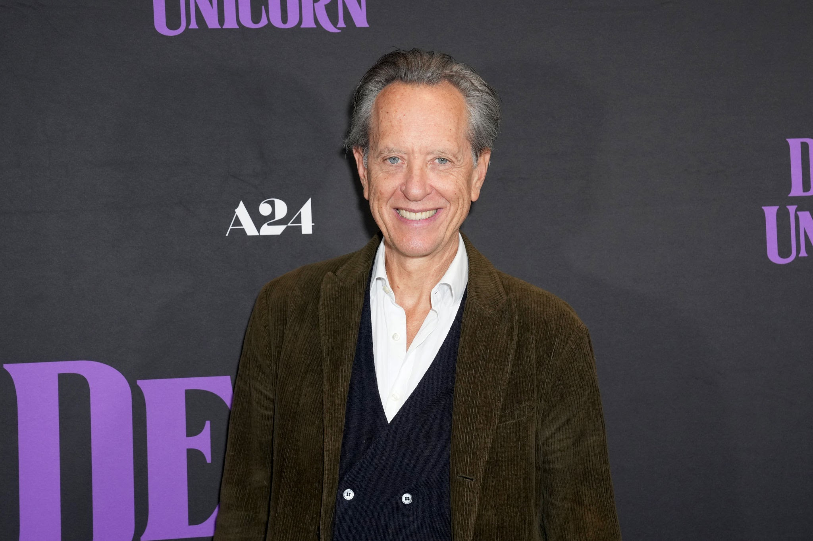
Richard E. Grant
Loki Clássico
Jack Veal
Loki Criança
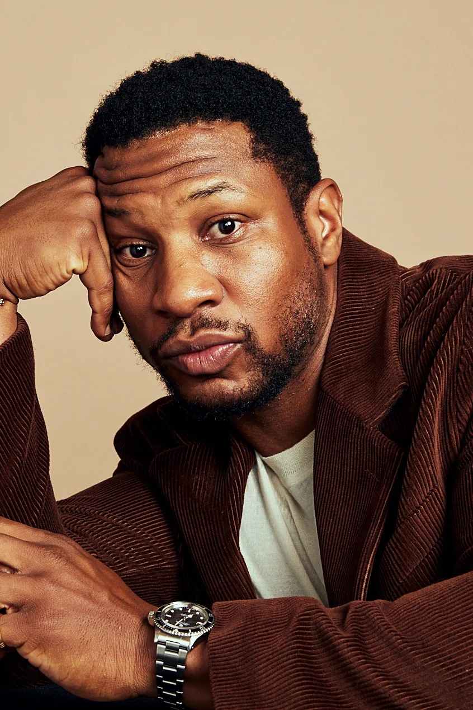
Jonathan Majors
Aquele que Permanece

Ke Huy Quan
Ouroboros
Personagens
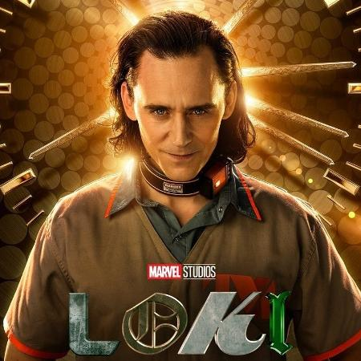
Loki Laufeyson
O Deus da Trapaça e protagonista da série, sempre tramando para escapar do controle do TVA.
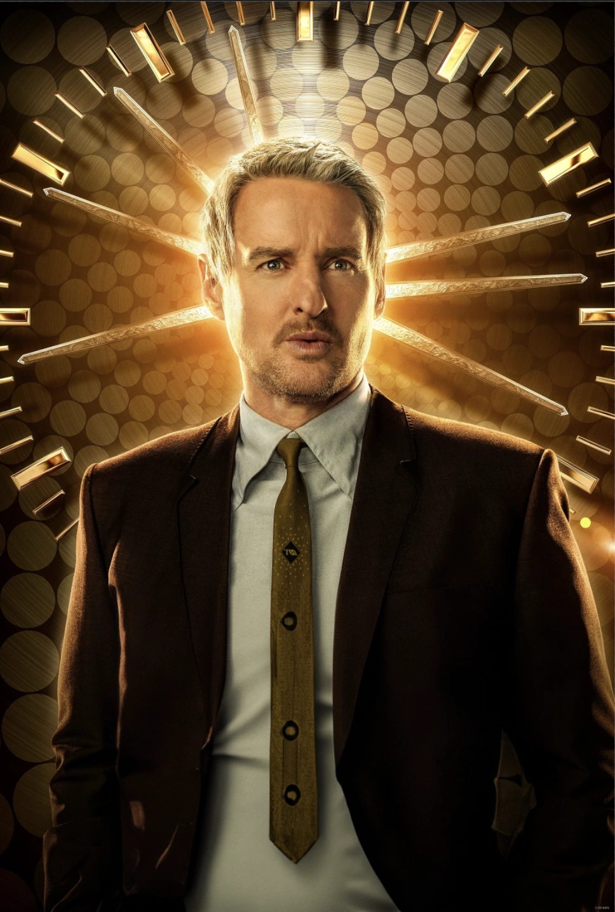
Mobius M. Mobius
Agente leal do TVA, responsável por recrutar Loki para ajudar a investigar anomalias temporais.
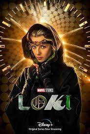
Sylvie Laufeydottir
Variante de Loki que escapou do TVA quando criança e busca vingança contra seus criadores.
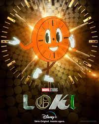
Miss Minutes
Mascote animado do TVA, apresentadora supramundo que ensina as regras da linha temporal.
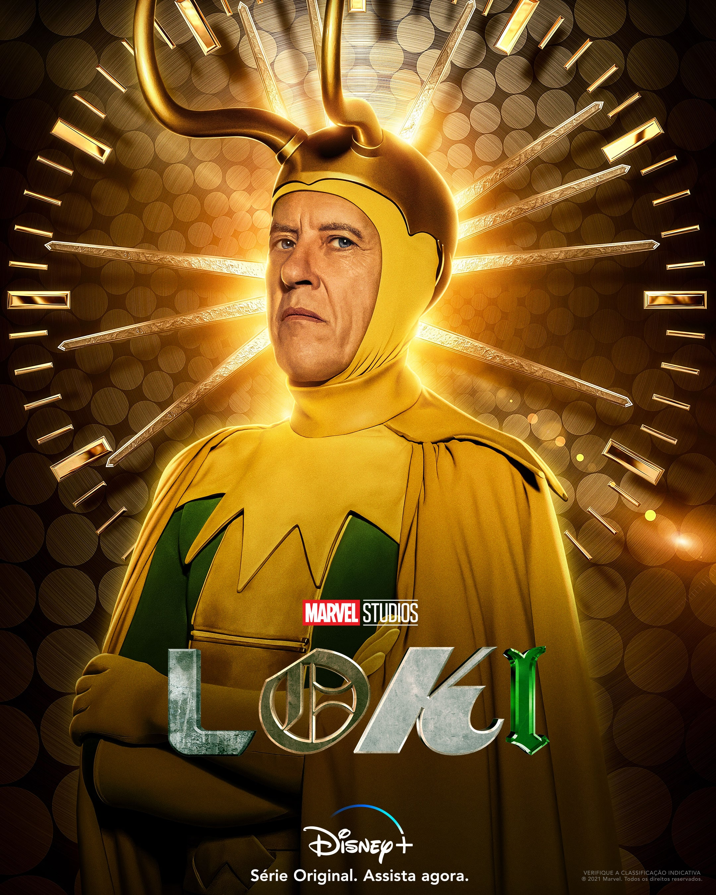
Loki Clássico
Versão original do Loki antes do surgimento das variantes, manipulador astuto de Asgard.
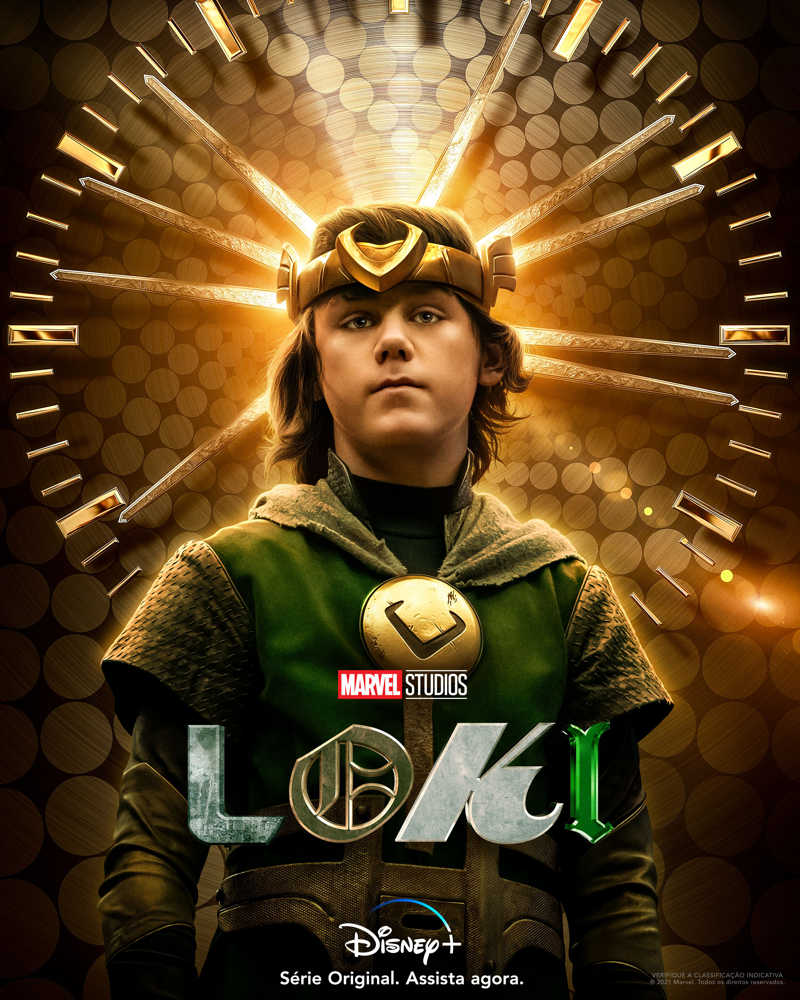
Loki Criança
Pequena variante que escapou cedo da destruição de Jotunheim, criada em linha temporal alternativa.
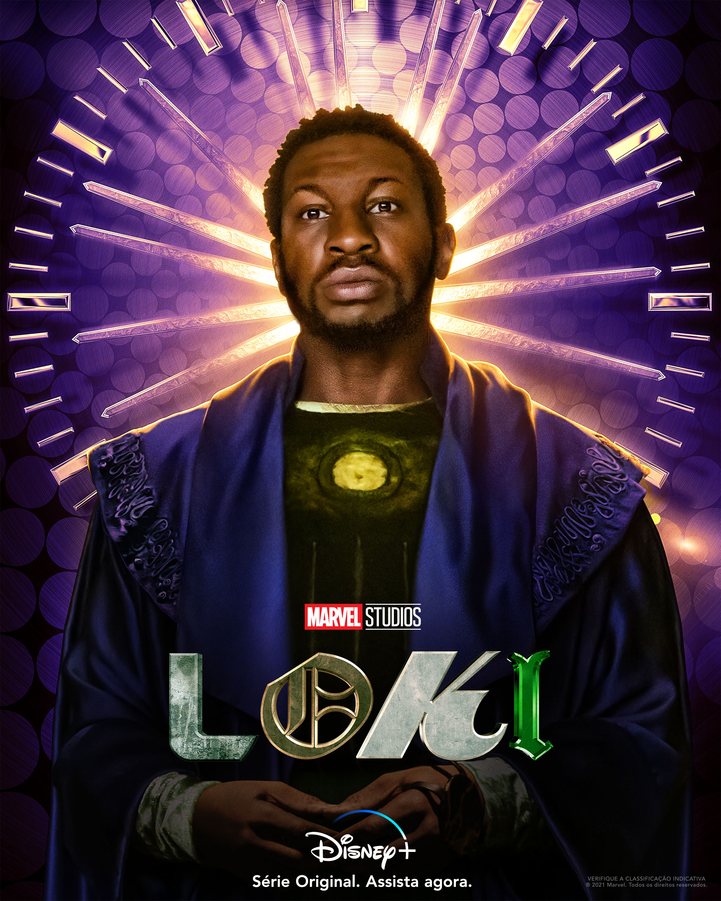
Aquele que Permanece
Fundador do TVA, mantém a linha do tempo sagrada, prevenindo a criação do multiverso.
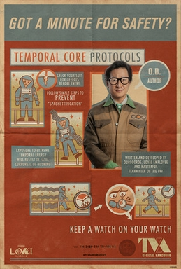
Ouroboros
Disco viral usado pelo TVA para capturar variantes temporais assim que brotam no fluxo do tempo.
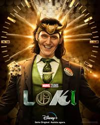
Loki Presidente
Variante que assumiu o controle do TVA e governa a linha do tempo com punho de ferro.
Curiosidades
Sim, o Time Variance Authority apareceu pela primeira vez em “Thor” #372 (1986), criado por Walter Simonson. Na série “Loki”, adaptaram o conceito para explorar variantes temporais.
Grande parte das cenas interiores do TVA foram filmadas nos estúdios Pinewood Atlanta (Geórgia, EUA). Algumas cenas exteriores de variantes vieram de locações na própria cidade de Atlanta.
Os designers se inspiraram em hospitais e instalações governamentais dos anos 1970/80, unindo estética retrô com tecnologia futurista. Os monitores antigos e papéis na mesa reforçam a sensação de “arquivo temporal” até hoje.
A primeira temporada de “Loki” possui 6 episódios, lançados entre 9 de junho e 14 de julho de 2021. Cada episódio aprofunda um pouco mais a mecânica do multiverso.
A trilha sonora original de “Loki” foi composta por Natalie Holt. Ela combinou elementos de música eletrônica com orquestra para criar a atmosfera misteriosa e temporal do TVA.
Sim. Por exemplo, no episódio 2 há uma pintura de um Flerken (das cenas do Capitão Marvel), referência sutil ao universo mais amplo da Marvel. Também há diversos “cartazes” de eventos que nunca aconteceram na linha do tempo principal.
Galeria
Trilha Sonora
- Theme – Loki